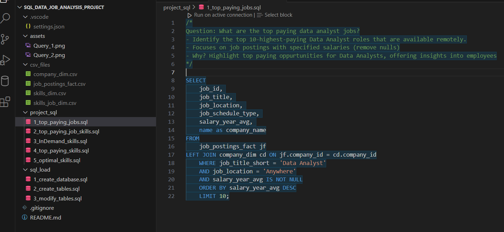
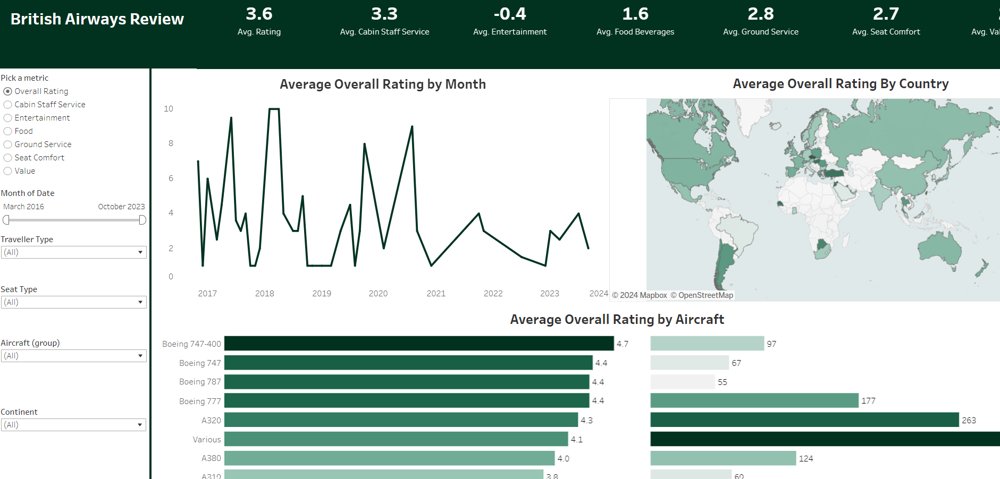
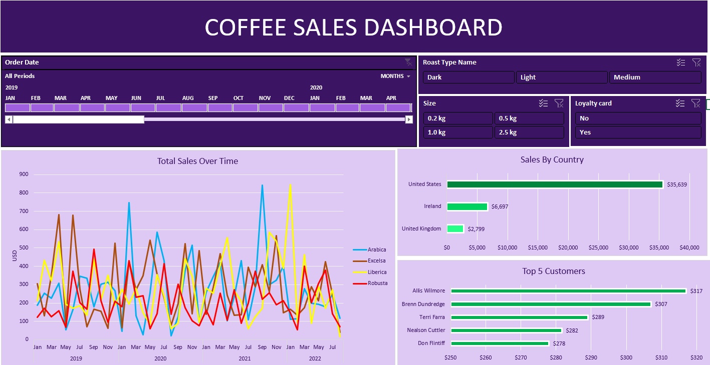
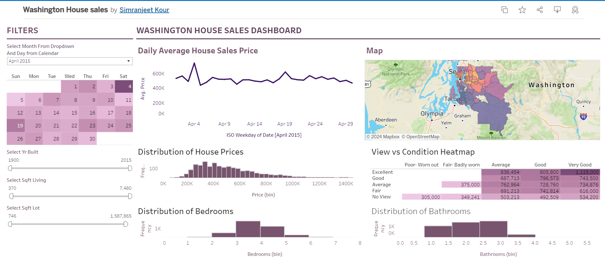

In this project we looked into the data job market. Focusing on Data Analyst Roles.
This project explores top paying jobs, in-demand skills and where high demand meets salary in data analytics.
Connected the database created at PostGreSQL to VSCode. Then, used ETL process to extract excel files and added it to VS code.
With reference to the databse schema, created relational database using the data imported. Explored data by performing EDA.
Analyzed teh results using excel and generated charts. Tools used PostGreSQL, VS Code, Excel and GitHub.


This Project allows end user to select a metric between overall airways rating, food, entertainment, services and comfort. It allows user to view airlines ranking by timeline. User can also filter
data by traveller and seat type, also by different Aircrafts along with specific continent. Dashboard shows visualization of Average rating by month, country and Aircraft as well. It
also depicts the number of reviews.

This Excel project showcase total coffee sales over time. Data includes 4 coffee types: Arabica, Excelsa, Liberica and Robusta. It includes two barchart
to show Sales by Country for United States, Ireland and United Kingdom. The second bar chart shows top 5 customers. Inserted timeline to filter the sales results. Additionally, inserted 3 different slicers, one for roast type other shows
the size of coffee beans in kg and customers who have Loyalty Card. The filters help analyze the sales data more efficiently.

This tableau project shows House Sales data for the state of Washington. Visualization will help determine Average
House Sales price for a given timeframe. How prices are affected with respect to the number of bedrooms and bathrooms in the house and as well as the condition of these houses on sale.
Inserted map to the dashboard to showcase the average price of houses with respect to the postal codes. Added filter to show sales by year bulit, sqft Living and sqft Lot.
In this Web Scraping Project, I learned how to scrape data from a website using the requests library and BeautifulSoup library.
Used Jupyter Notebook to run Python code. Manipulated and cleaned data using Pythons Panda library. The main use case of this Project is to extract web data and to store and save it to a csv file.
It is used by people and businesses who want to make use of publicly available web data to generate valuable insights and make smarter decisions.